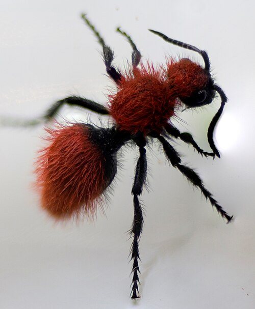
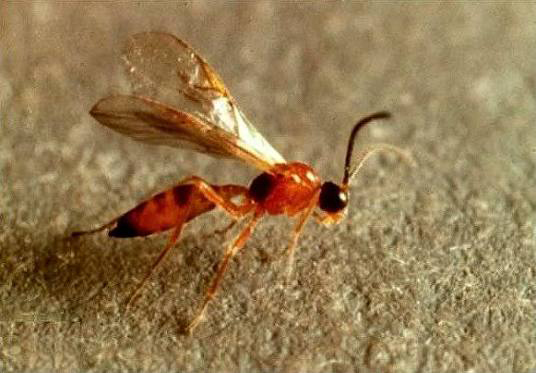
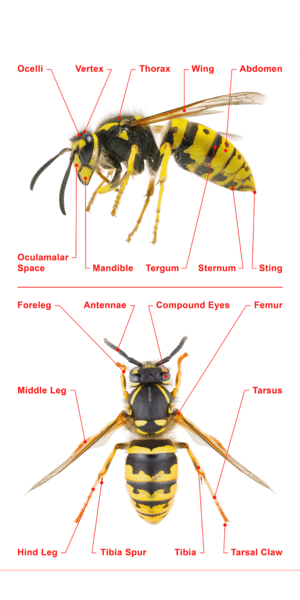
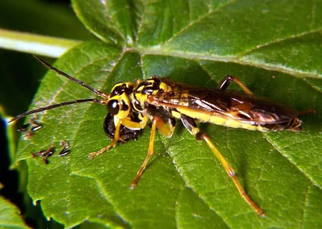
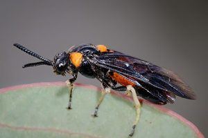
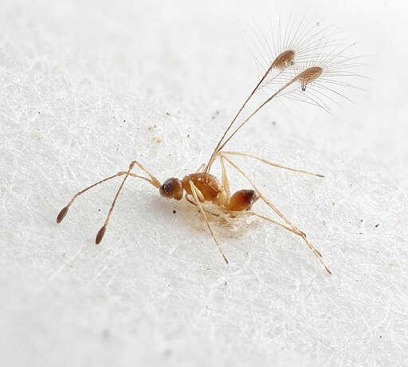
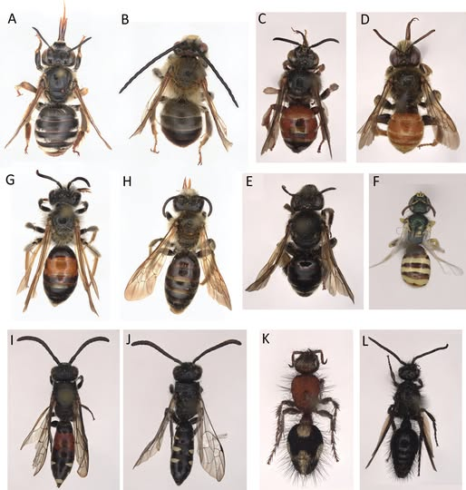
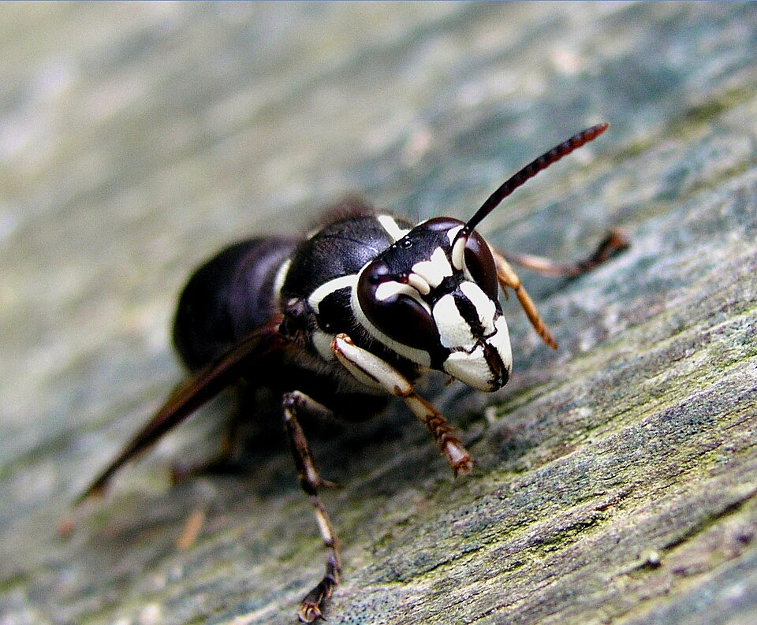
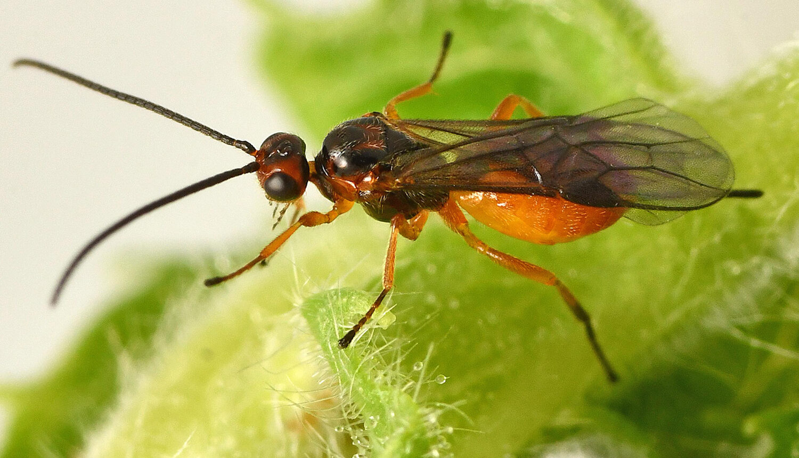

SCIENTIFIC INTELLIGENCE PLATFORM
Digital Specimen Passport
ردیابی شواهد از Field Report تا Scientific Reference
Demo Specimen

Dorsal specimen image · Demo
VERIFIED SPECIMEN
BIO-IR-KER-2026-000184
Psilocera crassispina
Expert Verified
Southern Kerman, Iran
2026-08-18
Dr. Mahla Shojaei Baghini
Hymenoptera
Pteromalidae
Identification Confidence94%
Specimen ID / QR Reference
94Evidence / 100
Overall Evidence Score
Composite evidenceMorphology96%
DNA98%
Geography91%
Host88%
Literature95%
Expert97%
Evidence Profile
Evidence ≠ species certaintyVerification Status
Audit stateExpert Verified
96%
3 / 3
98.7%
Preserved
Taxonomy
Scientific classificationAnimalia
Arthropoda
Insecta
Hymenoptera
Chalcidoidea
Pteromalidae
Pteromalinae
Psilocera
Psilocera crassispina
KingdomAnimalia
PhylumArthropoda
ClassInsecta
OrderHymenoptera
FamilyPteromalidae
SubfamilyPteromalinae
GenusPsilocera
Speciescrassispina
Geographic Distribution
Collection + Global context29.2084° N
57.1658° E
1,740 m
± 25 m
Montane shrubland
Southern Kerman
3 reference reports · Iran / Central Asia / Mediterranean
Morphology Analysis
Diagnostic imaging / Annotation enabled
Dorsal View
Lateral View
Head / Antenna01
Wing Venation · #0202
Ventral View
Leg
Abdominal Structure · #0303
Diagnostic CharacterDNA / Molecular Evidence
Barcode: COIBIO-SEQ-2026-000184
658 bp
98.7%
36.2%
LCO1490 / HCO2198
COI
Global Reference Matching
Similarity + Reference Quality| Source | Match Score | Reference Quality | Reference ID | Country | Species | Year |
|---|---|---|---|---|---|---|
| BOLD Systems | 98.7% | High | BOLD:ACX18422 | Iran | Psilocera sp. | 2025 |
| NCBI / GenBank | 97.9% | High | MN184221 | Turkey | P. crassispina | 2023 |
| Reference Specimen | 98.3% | Curated | VCH-MUS-8831 | Italy | P. crassispina | 2019 |
| GBIF | 96.8% | Moderate | GBIF:2198301 | Iran | Psilocera sp. | 2024 |
Specimen Timeline
End-to-end scientific traceField Report18 Aug 2026
Collected18 Aug
Preserved18 Aug
Lab Registration19 Aug
Morphology20 Aug
DNA Extraction22 Aug
COI Sequencing24 Aug
Global Matching25 Aug
Expert Review27 Aug
Verified29 Aug
Chain of Custody
Traceability / Responsibility / LocationField Collector18 Aug · Dr. Shojaei
Field Storage18 Aug · Kerman
Transport18 Aug · Secure
Laboratory19 Aug · Lab A
DNA Lab22 Aug · Molecular
Taxonomic Review27 Aug · Expert
Reference Collection29 Aug · Cabinet C4
Expert Review
Independent scientific assessmentDr. Mahla Shojaei BaghiniLead Taxonomic Reviewer · Status: Confirmed
Taxonomic ReviewerExternal morphology assessment · Confirmed
Molecular ReviewerCOI evidence assessment · Confirmed
Expert Consensus3 / 3Final Taxonomic Decision · Confirmed
Voucher Specimen
Physical reference anchorVCH-KER-2026-00184
BioTrace Reference Institute
Kerman Entomology
C-04
D-18
00184
Pinned / Dry
8 linked
Controlled Collection
Evidence Graph
How the scientific conclusion is constructedScientific References
Traceable external sourcesBOLD SystemsBarcode of Life Data Systems · 2026 · Reference comparison
HIGHNCBI / GenBankSequence repository · 2026 · Molecular evidence
HIGHGBIFGlobal Biodiversity Information Facility · 2026
DATAICZNInternational Code of Zoological Nomenclature · Identifier
RULESScientific PublicationsPeer-reviewed literature · DOI / Identifier linked
PEERMuseum CollectionCurated voucher records · Catalog trace
CURATEDScientific QA/QC
Data Quality Score · 96%GPS recorded
Collector recorded
Date recorded
Habitat recorded
Voucher preserved
Images available
Morphology reviewed
DNA quality acceptable
Sequence validated
Reference comparison completed
Expert review completed
Metadata complete
Data Quality Score96%
12 / 12 checks passed
Publication Readiness
Scientific release gate98%
95%
100%
97%
100%
100%
READY FOR SCIENTIFIC PUBLICATIONAll critical evidence gates passed
DNA Coding & Barcode
Digital Molecular Evidence Passport · Traceable molecular workflow for BIO-IR-KER-2026-000184
DNA Identity
Specimen-linked molecular recordDNA Sample IDBIO-DNA-2026-000184
Validated
BIO-IR-KER-2026-000184
COI
COI-5P
Tissue
Leg
EXT-2026-00184
PCR-2026-00184
SEQ-2026-00184
Generated / Valid
98.7%
94%
Confirmed · 3/3
Very Strong
Molecular KPI
Sequence-level summary658 bpCOI barcode region
98.7%QC validated
0Acceptable
36.2%Base composition
0Translation valid
DNA Workflow
End-to-end molecular traceabilitySPECIMEN18 Aug · BIO-000184Complete
TISSUELeg · TissueComplete
DNA EXTRACTION22 Aug · EXT-00184Complete
PCR23 Aug · PCR-00184Complete
AMPLIFICATION23 Aug · PASSComplete
SEQUENCING24 Aug · SEQ-00184Complete
QUALITY CONTROL25 Aug · 98.7%Complete
DNA BARCODE25 Aug · GeneratedComplete
INTERPRETATION27 Aug · ConfirmedComplete
Sequence Viewer
658 bp · COI-5P · Search / Highlight / SelectATCG
>BIO-SEQ-2026-000184|COI-5P
Validated
No base selected
DNA similarity is one layer of evidence and does not independently establish final taxonomic identification.
Base Composition
A / T / C / GSequence Quality by Base Position
1 → 658 · InteractiveCoding / Translation
DNA → Codon → Amino Acid · Hover a codonTranslated Protein
Protein product · Frame +1MALPDVAKT...
Coding Region / ORF
Open Reading Frame5′13276543′
PCR / Primer Information
Laboratory-level molecular contextLCO1490
HCO2198
~658 bp
PCR-BATCH-2026-08
23 Aug 2026
Molecular Lab Team
Thermal Cycler · Demo
PASS
Global DNA Matching
Similarity + Coverage + Reference Quality| Source | Identity | Coverage | Reference Quality | Reference ID | Country | Species / Context |
|---|---|---|---|---|---|---|
| BOLD Systems | 98.7% | 99.2% | HIGH | BOLD:KER18401 | Iran | Psilocera crassispina |
| NCBI / GenBank | 97.9% | 98.8% | HIGH | ON184000 | Iran | Psilocera sp. |
| Reference Specimen | 98.3% | 99.0% | MEDIUM | VCH-REF-0184 | Türkiye | Psilocera crassispina |
| Literature | 95.0% | — | HIGH RELEVANCE | DOI:DEMO-184 | Global | Comparative literature |
Barcode Gap Analysis
Nearest-neighbor separationPsilocera crassispina
98.7%
Psilocera desertica
94.1%
Psilocera iranica
92.8%
Other Pteromalidae
89.6%
Psilocera crassispina
4.6%
Reference Quality
Quality beyond similarityReference Quality · 91%
Voucher Available
Expert Identified
Geographic Metadata
Collection Date
Sequence Quality
Taxonomic Reliability
Reference Institution
Sequence Alignment
Query vs reference · Demo bioinformatics viewQueryATGGCC TTACCGATGACCTAGGCTACGATCGATCGATCGGCTAGC
ReferenceATGGCC TTACCGATGACCTAGGCTACGATCGATCGATCGGCTAGC
Match|||||| ||||||||||||||||||||||||||||||||||||||||
Mismatch T -
Identity: 98.7% · Mismatch: 1.3% · Gaps: Demo
Raw Sequencing Data
Chromatogram / trace quality · Demo onlyBIO-SEQ-2026-000184.ab1Raw trace file · Demo
PASSBIO-SEQ-2026-000184.fastaProcessed sequence
VALIDPASS · 98.7%
Molecular Quality Control
Scientific QC gate · All demo checks passedDNA extracted
DNA concentration acceptable
PCR successful
Amplicon size acceptable
Sequence length acceptable
Ambiguous bases acceptable
Contamination check passed
Translation valid
Stop codon check passed
Sequence validated
97%Molecular QC Score
DNA Evidence Contribution
Evidence layer · not identification certaintyScientific rule: DNA Similarity, Reference Quality and Molecular Evidence Strength are distinct from Final Identification Confidence. A high sequence match does not independently establish the species identification.
98%
Very Strong
DNA Audit Trail
Molecular processing historyDNA Extraction22 Aug 2026
PCR23 Aug 2026
Sequencing24 Aug 2026
Sequence QC25 Aug 2026
Barcode Generated25 Aug 2026
Global Matching26 Aug 2026
Molecular Review27 Aug 2026
Advanced Laboratory Data
LEVEL 3 · expandable raw dataEXT-2026-00184
PCR-2026-00184
PCR-BATCH-2026-08
Molecular Lab Team
Thermal Cycler / Seq Demo
GGTCAACAAATCATAAAGATATTGG
TAAACTTCAGGGTGACCAAAAAATCA
EXT → PCR → SEQ → QC → BARCODE
Traceability Graph
Specimen → Tissue → Extraction → PCR → Sequence → Barcode → ReferencesSPECIMEN
BIO-000184
BIO-000184
TISSUE SAMPLE
Leg
Leg
DNA EXTRACTION
EXT-00184
EXT-00184
PCR
PCR-00184
PCR-00184
SEQUENCE
SEQ-00184
SEQ-00184
BARCODE
GLOBAL REFS
GLOBAL REFS